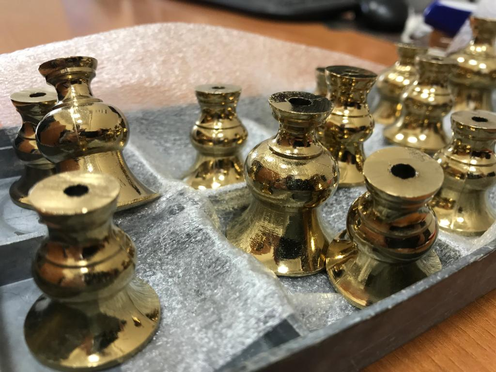

Компания предлагает услуги вакуумной металлизации (нанесение покрытий магнетронными и дуговыми источниками), которые позволяют без лишних затрат на оборудование и персонал расширить ассортимент выпускаемой Вами продукции, исследовать возможности новых решений.
Среди оказываемых услуг:
- Нанесение защитно-декоративных покрытий тона: хром, серебро, золото (нитрид титана)
- Нанесение покрытий по технологии лак-металл-лак;
- Нанесение изностойких, упрочняющих покрытий;
В качестве материалов изделий могут быть детали из металлов, пластмасс ( АБС, полиамид, поликарбонат и др.), стекло и керамика.
Функциональное назначение покрытий:
- декоративное;
- износостойкое;
- антистатическое;
- функциональное;
Среди изделий на которые мы нанесли покрытия: мебельная фурнитура, комплектующие сантехники, полотецесушители, детали интерьера и экстерьера автомобилей и мотоциклов, корпуса приборов, режущий инструмент.
Основные затраты при организации производства нанесения покрытийв вакууме приходятся на технологические установки и оборудование. Услуги, оказываемые нашей компанией, позволяют избежать затрат на его приобретение, а оплачивать лишь эксплуатационные расходы. Также снимаются вопросы с персоналом, который должен обслуживать установки.
Наша компания готова нанести бесплатное пробное напыление (предложение для серийных производителей продукции).
Как это происходит на практике:
При потребности в нанесении покрытий, заказчик, предварительно связавшись с нами, отправляет опытную партию образцов продукции с описанием типа покрытия и его назначении. Если заказчик не знает необходимое покрытие изделия, но имеет образец, образец отдается на анализ. После этого, мы наносим требуемое покрытие и отправляем заказчику. Если покрытие устраивает заказчика, мы разрабатываем оснастку для запуска проекта в серию.Согласовываем с заказчиком план-график поставок заготовок и отгрузки продукции, с нанесенным покрытием.
При расширении объемов напыления, когда рационально приобрести собственное оборудование, мы готовы поставить вакуумную установку с сопутствующими оборудованием (мойки, сушильные шкафы, полировальные машины и пр.) При этом мы расскажем Вам где закупать расходные материалы, комплектующие и запасные части. Поможем с калькуляцией себестоимости продукции, себестоимостипроцессов: отмывка, полировка, сушка, нанесение покрытий. Обучим персонал, в случаях возникновения сложностей в технологическом процессе.Всегда готовы оказать помощь и консультацию.
Таким образом Вы получаете готовое решение, которое позволяет Вам, без перерывов в работе и с минимальными рисками масштабировать нанесение покрытий от единичных партий до серийного производства.
